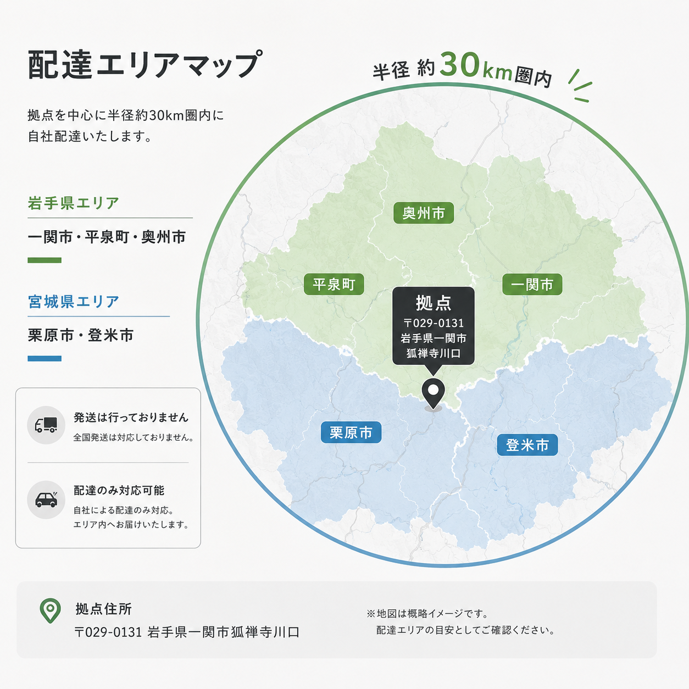

薪販売
岩手の山から届く、しっかり乾燥した薪
自社で伐採・製材した岩手産の広葉樹を中心に、適切に乾燥させた高品質な薪をお届けします。
岩手産広葉樹メイン
ミズナラ・クリ・カシなど火持ちの良い広葉樹を中心にラインナップ。燃焼効率が高く、暖炉・薪ストーブに最適です。
適切な乾燥管理
適切な期間乾燥させることで、含水率を下げ燃焼効率を最大化。煙・ヤニが少なく、ストーブや暖炉をきれいに保てます。
自社配達・現地引き取り
岩手県南〜宮城県北の対象エリアへ自社配達いたします。また、一関市狐禅寺川口の拠点への現地引き取りも可能です（要事前予約・アポなし不可）。
明瞭会計
樹種・長さ・数量・梱包費・送料を個別にお示しし、わかりやすい料金設定。お見積りはLINEまたはフォームから。
商品情報
| 主な樹種 | ミズナラ、クリ、カシ、ナラ（その他広葉樹）、スギ・アカマツ（針葉樹も対応可） |
|---|---|
| 長さ | 30cm・35cm・40cmが基本。ご要望に応じてカット長さは相談可能 |
| 乾燥 | 適切に乾燥済み（含水率については個別にお問い合わせください） |
| 梱包 | 段ボール箱または網袋（数量・配送方法により異なります） |
| 配達エリア | 岩手県南〜宮城県北エリア（一関市・平泉町・奥州市・栗原市・登米市） ※エリア外の場合は個別にご相談ください。 |
| 現地引き取り | 岩手県一関市狐禅寺川口より可能。事前にLINEにてご連絡ください。 |
| 価格 | 数量・樹種・配達方法によって異なります。お問い合わせの際にお見積もりをご提示します。 |
| お支払い | 詳細はお問い合わせ時にご案内します |
薪 配達エリア目安マップ

※正確な配達エリアを示すものではありません。目安としてご参照ください。
※エリア外への配達を希望される場合は個別に対応いたしますので、お気軽にご相談ください。
薪を知る
薪のある暮らしには、火を使う楽しさがある。
薪は、ただ部屋を暖めるための燃料ではありません。火を起こし、炎を眺め、木がはぜる音を聞き、薪を一本ずつ焚べていく。
便利な暖房器具とは少し違う手間の中に、薪ならではの暖かさと楽しさがあります。
山で育った木が、人の手によって薪となり、最後は熱となって暮らしを暖める。薪は、森と暮らしをつなぐ身近な木材資源でもあります。
炎を楽しむ
薪の炎は常に形を変えます。揺れる炎や熾火を眺めながら過ごす時間そのものが、薪ストーブや焚き火ならではの魅力です。
体を包む暖かさ
薪ストーブはストーブ本体や周囲から伝わる輻射熱によって、空間をじんわりと暖めます。
音と香り
木が燃えるときの音や、樹種によって異なる香りも天然木ならではの楽しみです。
自分で火を育てる
焚き付けから始め、薪を足し、空気を調整する。自分の手で火を育てること自体が一つの体験になります。
もしもの時の熱源
薪ストーブなど電源を必要としない設備は、停電時にも暖房や簡単な調理に利用できる場合があります。
※実際の使用は設置機器の仕様・安全基準に従ってください。
森の資源を最後まで活かす
林業では一本の木からさまざまな木材が生まれます。建築材や一枚板として利用できる部分だけでなく、用途の限られる木材も薪として熱へ変えることで、森林資源を有効活用できます。
木によって、火は変わる
薪にはそれぞれ個性があります。「広葉樹が良く、針葉樹が悪い」ということではありません。火持ちを重視するのか、着火のしやすさを重視するのか。目的によって適した木は変わります。
広葉樹
例：ミズナラ・ナラ・クリ・カシ など
- 木の密度が比較的高い
- 火持ちが良い
- 熾火が長く残りやすい
- 長時間の暖房に向く
主な用途：薪ストーブ・暖炉・長時間の焚き火
針葉樹
例：スギ・アカマツ など
- 火が付きやすい
- 炎が立ち上がりやすい
- 広葉樹より比較的早く燃える
主な用途：焚き付け・火起こし・短時間の焚き火
薪ストーブでは、着火には細い薪や針葉樹 → 火が安定してから広葉樹というように使い分ける方法もあります。
ただし最適な薪や使用方法はストーブごとに異なるため、メーカーの取扱説明書に従ってください。
薪の性能を大きく左右するのは「乾燥」です。
伐採したばかりの木には多くの水分が含まれています。水分の多い薪をそのまま燃やすと、燃焼エネルギーの一部が水分を蒸発させるために使われ、火が安定しにくくなります。
煙やススが増える原因にもなるため、薪は十分に乾燥させてから使用することが重要です。一般に薪ストーブ用の薪では、含水率20%前後以下が一つの目安として知られています。
齋藤林業の薪は適切に乾燥済みです。含水率については個別にお問い合わせください。
乾燥した薪を見分ける参考ポイント
- 木口にひびが入っている
- 生木より軽く感じる
- 木同士を叩いた際に乾いた音がする
- 表面の色が落ち着いている
- 樹皮が浮いたり剥がれやすくなっている
※あくまで目安です。正確に確認する場合は薪用含水率計をご使用ください。
買った薪も、保管方法で状態が変わります。
01 地面から離す
薪を直接地面へ置くと湿気を吸いやすくなります。パレット・ラック・薪棚などを使用しましょう。
02 上から雨を防ぐ
屋根または上部カバーを設け、雨や雪を直接受けないようにします。
03 風を通す
薪棚全体をビニールシートなどで密閉せず、側面は風が通る状態を基本にします。
04 家に密着させすぎない
外壁や基礎との間に空間を設けます。湿気・虫・シロアリ等への対策にもなります。
05 古い薪から使う
保管した薪は長期間放置せず、乾燥状態を確認しながら古いものから使用しましょう。
薪ストーブの基本
薪ストーブは、薪を入れて火を付ければ終わりではありません。火の立ち上げ方、薪の太さ、空気の取り入れ方によって燃え方が変化します。
細い薪・焚き付け材などを使って火を起こします。
火が安定するまで、いきなり太い薪を大量に入れず徐々に薪を追加します。
炉内が十分に暖まったら広葉樹などの薪を加え、安定した燃焼へ移行します。
炎が落ち着いた後も、赤く残った熾火から長時間熱が放出されます。
薪ストーブはメーカー・機種によって燃焼方式、適正薪サイズ、空気調整方法、温度管理方法などが異なります。具体的な操作方法については、必ずお使いの薪ストーブの取扱説明書・施工業者・メーカーの指示に従ってください。
安全に楽しむために
⚠️ 未乾燥薪を無理に燃やさない
煙・スス・タール等が増え、ストーブや煙突のトラブルにつながる場合があります。
🧹 煙突・ストーブを点検する
シーズン前など定期的に煙突・炉内・接続部分を確認してください。必要に応じて専門業者へ点検・清掃を依頼しましょう。
🌬️ 一酸化炭素に注意
室内で燃焼機器を使用する場合は適切な換気を行ってください。CO警報器等の設置も検討しましょう。
🧯 周囲の可燃物に注意
ストーブ・煙突・焚き火の周囲には十分な安全距離を確保してください。カーテン・家具・薪・衣類などを不用意に近づけないでください。
🚫 燃やしてはいけないもの
塗装材・防腐処理材・接着剤を使用した木材・合板・プラスチック・家庭ごみなど、燃焼を前提としていない材料は薪として使用しないでください。
🪣 灰の処理
灰には見た目以上に長時間熱が残る場合があります。完全に消火・冷却を確認し、適切に処理してください。
丸太を割るところから、薪づくりは始まります。
伐採した丸太は、そのままでは乾燥に時間がかかります。適切な長さに玉切りし、薪として使いやすい大きさへ割ることで表面積が増え、乾燥を進めやすくなります。
薪の太さによって燃え方も変わります。細割りは火が付きやすく、太割りはじっくり長く燃える。
薪割りは単なる力仕事ではなく、その後の乾燥や燃焼まで考えた薪づくりの重要な工程です。
⚠️ 薪割り時の安全
- 作業者の周囲に人を近づけない
- 斧や薪割り機の作業範囲へ入らない
- 安定した足場で行う
- 滑りにくい靴を使用する
- 動きやすく作業に適した服装にする
- 子どもは必ず保護者・スタッフの指示に従う
- 疲労時や集中力が低下した状態で無理に作業しない
- 使用する機械・工具はスタッフの指示に従う
イベント参加時は、スタッフの指示を最優先としてください。
薪について分からないことがあればご相談ください
「このストーブには何cmの薪がいい？」「どのくらい注文すればいい？」「広葉樹をまとめて購入したい」など、LINEで気軽にご相談いただけます。
岩手の森から、暮らしの火へ。
山で育った一本の木を伐り、運び、その木に合った用途へ選び分ける。一枚板や木材として利用されるものもあれば、薪として最後まで熱を届ける木もあります。
齋藤林業は、森から生まれた木材資源を無駄に消費するのではなく、その木に合った価値へ変え、次の使い手へ届けることを大切にしています。薪も、その循環の一つです。
薪のご注文・お見積もり
以下フォームからお問い合わせください。またはLINEから写真・数量を直接送信していただけます。
LINEで薪について相談する
在庫・配達・薪ストーブ用の薪・現地引き取りなど、お気軽にお問い合わせください。
「〇〇kgほしい」「この薪ストーブに合うサイズは？」なども、写真付きで送っていただけます。